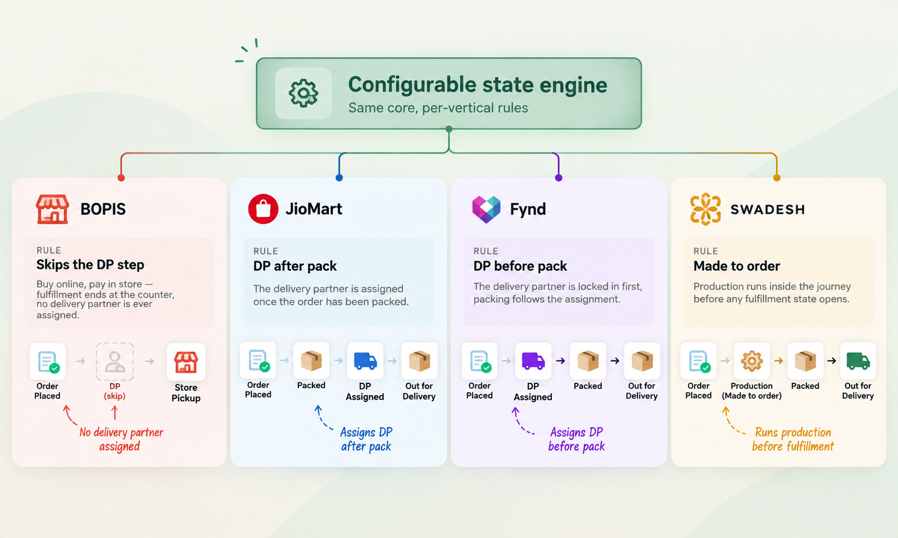

Regression Testing
Test Automation / CI-CD / Quality Engineering
Fynd Platform is an omni-channel commerce platform — a Shopify-class system, but with faster turnaround and support, because Fynd builds and owns every integration instead of leaving it to the client.
The Order Management System sits at the center of it. Catalogue, Inventory, Delivery Partner, Payments and Finance services all feed into it, but the actual business logic and state transitions live in the OMS. Every order breaks down into shipments, shipments into bags, and every bag moves through a defined state tree — placed, confirmed, invoiced, DP assigned, packed, picked, delivered — with cancellation and return branches at multiple points.

That state tree wasn't actually one journey — it was several.
That state tree wasn't actually one journey — it was several, and the list kept growing as Reliance brought more brands onto the platform. Each business vertical needed the same underlying states to behave differently:
Instead of forking the state manager per vertical or layering in more conditional logic, I built an API that makes the state tree itself configurable — per business vertical — without changing core code.
Any vertical can now define which actions fire on which state, whether a transition is automatic or manual, and where a step like DP assignment or packing sits in the sequence. Onboarding a new business model becomes a configuration exercise, not an engineering sprint.
Too rigid, and every vertical needs a code change. Too flexible, and nobody can debug it.
The risk on either side was real: too rigid, and every new vertical needs a code change; too flexible, and you end up with an unreadable rules engine nobody can debug.
I anchored the configuration surface to the variance I could actually observe across live verticals — sequencing, automation vs. manual triggers, and cancellation windows — rather than designing for hypothetical future cases. That kept the API expressive enough to solve real problems without becoming a general-purpose scripting layer.
After Reliance's acquisition of Fynd, this platform became the backbone of Jio Commerce. The configurable journey engine is a direct reason a made-to-order D2C brand like Swadesh and a hyperlocal grocery operation like JioMart can run on the same core OMS today — each with a completely different order journey, none of it hardcoded.